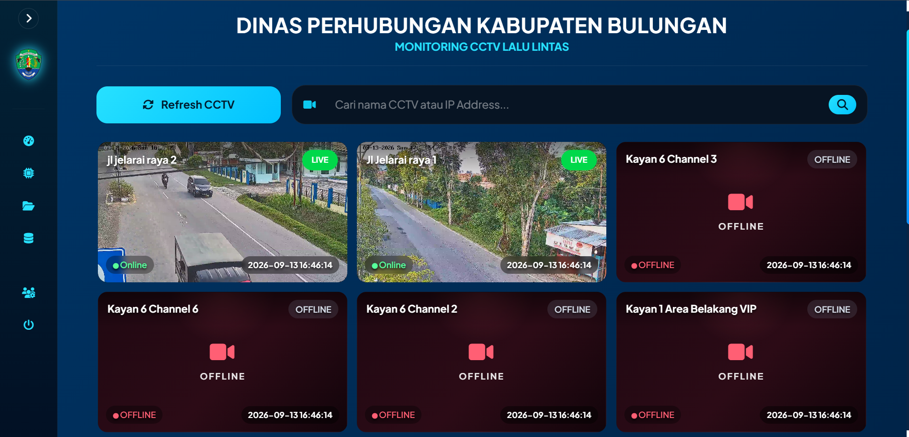

The Transportation Department of Bulungan needed a centralized system to monitor and analyze traffic data collected from multiple CCTV points.
Smart Counting CCTV is a web-based monitoring dashboard that integrates data from more than 10 CCTV points. The system presents vehicle counting data and traffic analytics through an interactive dashboard, helping users monitor traffic conditions and review collected data in a more structured way.
As a Freelance Full Stack Web Developer, I developed and enhanced the dashboard across both frontend and backend. I worked on data processing, database integration, dashboard interfaces, traffic analytics, and reporting features.
I also integrated CCTV streams into the monitoring interface and developed data visualizations to present vehicle volume and traffic performance indicators such as Volume to Capacity Ratio (VCR).
The application was developed using PHP and MySQL for the backend and database, with Bootstrap and JavaScript for the web interface. Chart.js was used to visualize traffic and vehicle counting data in the dashboard.
HLS.js was integrated to display CCTV streams within the web application, while Dompdf was used to support report generation. The system also processes traffic counting data to provide analytics such as vehicle volume and Volume to Capacity Ratio (VCR).
The system centralized traffic monitoring and analysis from more than 10 CCTV points into a single web-based dashboard. This made it easier to review vehicle counting data, monitor traffic conditions, and access analysis and reports from one platform.
This project strengthened my understanding of developing a data-driven monitoring system for a real-world environment. I learned how to work with data collected from multiple CCTV points and transform it into useful visualizations and traffic analysis.
I also gained practical experience integrating live CCTV streams, handling larger datasets, building reporting features, and connecting backend data processing with an interactive dashboard.
